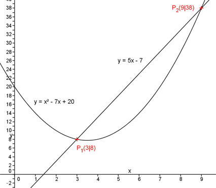
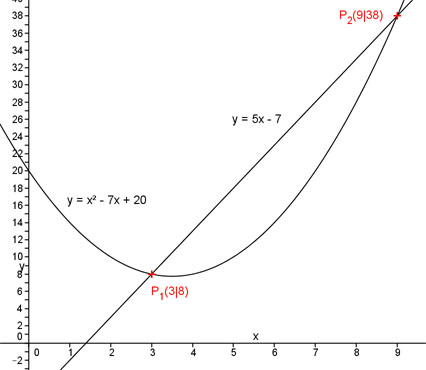

Aufgabe 80
An welchen Stellen x schneiden sich die
Parabel y = x2 - 7x + 20 und die
Gerade y = 5x - 7?
Für die Schnittpunkte gilt:
x2 - 7x + 20 = 5x – 7 |-5x
x2 - 12x + 20 = – 7 |+7
x2 - 12x + 27 = 0
p, q – Formel:
p = -12 ; q = 27
 x1,2 = 6 ± 3
x1 = 6 – 3 = 3
x2 = 6 + 3 = 9
Die Schnittpunkte liegen bei x = 3 und x = 9.

x1,2 = 6 ± 3
x1 = 6 – 3 = 3
x2 = 6 + 3 = 9
Die Schnittpunkte liegen bei x = 3 und x = 9.
